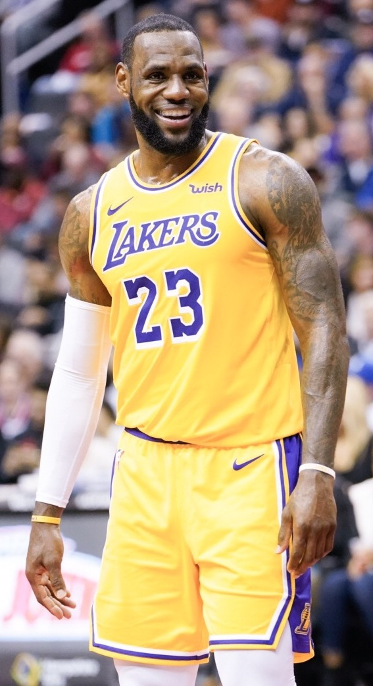

개요
NBA는 미국과 캐나다의 30개의 팀으로 이루어져 있는 미국 프로 농구 협회입니다. 또한, 유로 리그와도 상당히 차이가 나는 압도적인 전 세계 최고의 프로 농구 리그입니다.주요 선수
-
매직 존슨

역대 최고의 포인트가드로, 래리 버드와의 라이벌 관계를 통해 1980년대 NBA 흥행을 이끌었습니다.
-
래리 버드
보스턴 셀틱스를 대표하는 슈퍼스타로, 매직 존슨과 함께 NBA의 황금기를 만든 인물 입니다.
-
마이클 조던

6번의 우승과 6번의 파이널 MVP를 차지하며, NBA 역사상 최고의 선수로 평가받습니다.
-
르브론 제임스
현재도 활약 중인 선수로, 우승과 누적 기록 모두에서 레전드급 성과를 이어가고 있습니다.
-
하승진
한국인중 유일하게 NBA무대에 있어본 선수입니다.
선수 기록 비교
| 선수이름 | 우승횟수 | 파이널MVP | 시즌MVP | 통산 득점 | 키 | 몸무게 |
|---|---|---|---|---|---|---|
| 매직 존슨 | 5 | 3 | 3 | 17707 | 206cm | 97kg |
| 래리 버드 | 3 | 2 | 3 | 21791 | 206cm | 99kg |
| 마이클 조던 | 6 | 6 | 5 | 32292 | 198cm | 89kg |
| 르브론 제임스 | 4 | 4 | 4 | 42184 | 206cm | 113kg |
| 하승진 | 0 | 0 | 0 | 70 | 221cm | 138kg |
| 비고 | 기록은 NBA 2024-25시즌 까지의 기록 | |||||
NBA의 엄청난 기록들
-
윌트 체임벌린 - 단일 경기 100 득점
보통은 한 경기에 팀 내에서 가장 많은 득점을 하는 선수가 30점대정도 됩니다.
-
르브론 제임스 - 통산42184 득점
아직 은퇴하지 않은 선수가 통산 득점 1위인 42184점을 기록중이고 기존 1위였던 기록은 38387점으로, 큰 차이로 1위를 기록중입니다.
-
러셀 웨스트브룩 - 한시즌 트리플더블 42회
트리플더블이란 득점/어시스트/리바운드/스틸/블락 중 3분야를 2자리를 기록하는것을 말합니다. NBA에서 한 시즌에 82경기를 하는데 그중 42경기에서 트리플더블을 기록한 유일한 선수입니다.
-
클레이 톰슨 - 한 경기 3점슛 메이드 14개
보통은 한 경기에 3점슛을 많이 넣는 선수가 7개정도 기록을 합니다.
-
존 스탁턴 - 통산 어시스트 15806개/통산 스틸 3265개로 모두 1위
한 분야에서 정상을 달성하기도 힘든데 두 분야에서 오랫동안 정상 자리를 지키고 있는 선수. 어시스트 2위기록은 12499개, 스틸 2위 기록은 2717개로 당분간 깨지기 정말 힘들것으로 예상됩니다.
- 빌 러셀 - 통산 우승 11회
농구의 황제 마이클 조던이 6회의 우승을 기록했는데, 11회의 우승을 기록하였다는것은 당시 보스턴이 얼마나 압도적이었던 팀인지를 보여줍니다.